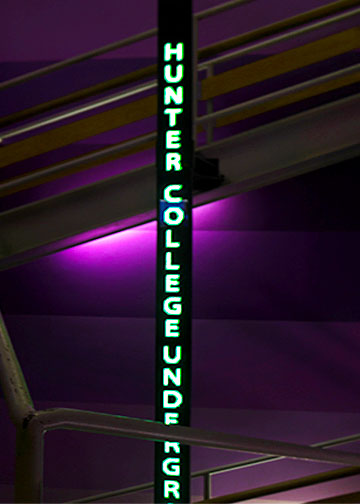

Here is the first image for Homework 2: I took this picture because I like how the purple wall contrasts with the green neon signs, and it shows the Hunter spirit with the purple colored wall. I added the picture and cropped it to the requested size. I adjust the brightness, contrast, and exposure to lift the brightness of the background to contrast the color. Hence, I use saturation to make it more vibrant and deepen the purple color. I used other tools like Vibrance to continue to deepen the purple color and add more green to the neon sign. I use the curves to focus on specific areas in the background to make them brighter and deepen the color.
